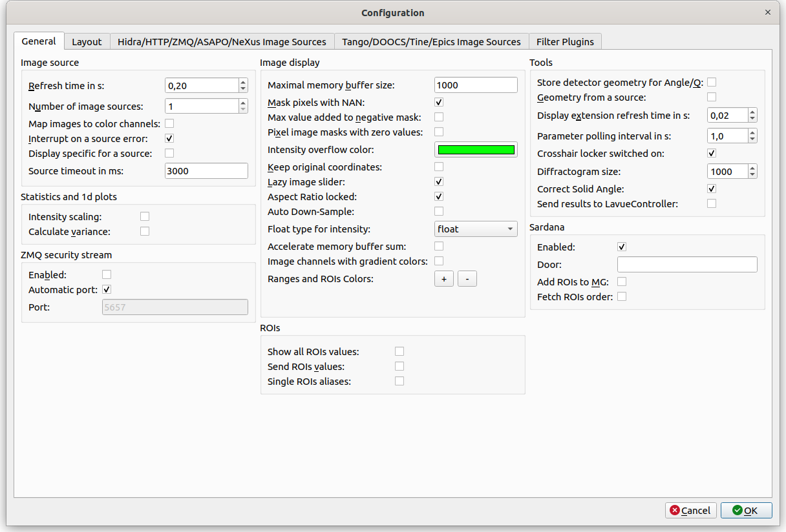

General Settings¶
The first tab of the configuration dialog contains General Settings. It is divided into a few groups:

Image source
- Refresh rate in s: select a minimal time between consecutive frames
- Number of image sources: a number of different image sources from which images should be stitched
- Map images to color channels: places images form different image sources to separate color channels
- Interrupt on source errors: stops live image viewing on image source errors
- Display specific for a source: store/retrieve display parameters for an each image source separately
- Source timeout in ms: maximal time in milliseconds to wait for a response , e.g. from Hidra or HTTP image sources
Statistics and 1d plots
- Intensity scaling: applies the intensity display scaling to image statistics and 1d-plots
- Calculate variance: perform calculations of variance from image pixel intensities
ZMQ security stream
- Enabled: turns on sending the ZMQ security stream with basic information about the image, e.g. maximal intensity
- Automatic port: selects a port number for the ZMQ security stream automatically
- Port: defines a port number for the ZMQ security stream
Image display
- Maximal memory buffer size: maximal frame number in the memory buffer
- Mask pixels with NAN: stores masked pixels as a float Not-A-Number (NAN)
- Max value added to negative mask: add maximal type value of current image to the negative high value mask
- Pixel masks with zero values: causes that zero pixel values of mask image are interpreted as masking
- Keep original coordinates: causes the 2D-plot axes transforms with image transformation
- Lazy image slider: plot a new image after the image slider is focused out
- Aspect Ratio locked: sets the aspect ratio to 1:1 in the 2D-plot
- Auto Down-Sample: turns on auto-down-sampling mode of pyqtgraph
- Float type for intensity: type to which intensity is converted if it is changed to float type
- Accelerate memory buffer sum: speeds up calculation of an image sum for the memory buffer tool
- Image channels with gradient colors: use gradient color maps to display pixel intensities in the RGB-channel mode
- Ranges and ROIs Colors: allows to defined colors of Ranges or ROIs selection frames. Colors are used cyclically
ROIs
- Show all ROIs values: calculates ROIs sum values for all ROI frames
- Send ROIs values: sends ROIs sum values to LaVueController tango server
- Single ROIs aliases: adds rois1, roi2, roi3, … aliases if a number of rois is higher than their aliases
Tools
- Store detector geometry for Angle/Q: store the detector geometry for the Angle/Q tool in the configuration settings
- Geometry form a source: fetch metadata parameters describing detector geometry from the image source
- Display extension refresh time in s: Minimum refresh time for display extensions
- Parameter polling interval in s: time in seconds between read-outs of detector tango attributes in the Parameters tool
- Crosshair locker switched on: initial status of intensity crosshair locker
- Diffractogram size: number of points in the diffractogram
- Correct Solid Angle: correct solid angle flag for diffractogram
- Send results to LavueController: sends the current tool results to LaVueController tango server
Sardana
- Enabled: turns on communication with Sardana
- Door: Door tango device to communicate with Sardana
- Add ROIs to MG: causes the ROIs Apply button adds the corresponding ROIs aliases into the current Sardana Measurement Group
- Fetch ROIs order: read a ROIs order from Sardana environment variables